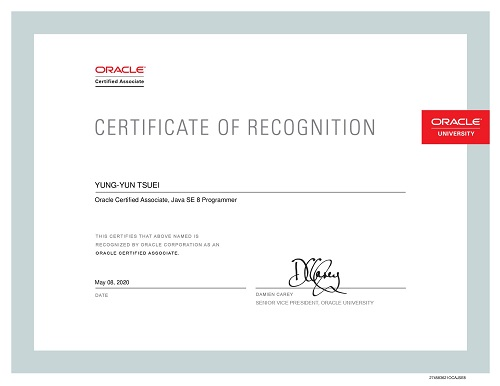

| 作品
國立東華大學弓道社 社團網頁
- 使用 Visual Studio Code 編譯
- HTML5、CSS3 基本設計
- Bootstrap 框架規劃響應式網頁 (RWD) 版型
- 使用Bootstrap JS 互動組件
- JavaScript、JQuery 製作按鈕變換
- 插入 Google Fonts 、 Font Awesome 小元件豐富網站

國立東華大學弓道社 社團網頁
前往
Java 8 國際證照 OCAJP

| 學歷
國立東華大學．應用數學系統計組．學士 - 2015~2019
臺北市立萬芳高中 - 2012~2015
| 自傳
【關於我】
出生於1997年，來自新北市，國立東華大學應用數學系畢業，2019年應屆畢業生。身為數學系統計組的我，精密的思考與嚴謹的邏輯推導是我擅長之處，遇到難題時會想要刨根究底直到找出問題的邏輯性。
在大學修課期間，我接觸過很多種程式語言，而寫程式深深吸引到我，於是我決定從較多人使用的Java語言開始深入學習。
畢業後，我報名了補習班的程式課程，學習完整的程式語言架構，並在服兵役期間看書自學前端語言，假日實作網站頁面，役畢後協助東華大學弓道社建立社團網頁。
【學習經歷】
- 2017.08 , C&C++程式設計 - 18小時
- 2019.09 , Java 先修基礎程式設計 - 30小時
- 2019.10 , Java OCP JP 程式設計師認證班 - 108小時
- 2020.04 , SQL Server資料庫概論 - 15小時
- 2020.04 , Dreamweaver CC創意網頁設計 - 18小時 (學習中)
- 2020.05 , Photoshop CC影像設計 - 18小時 (學習中)
【活動經歷】
大二曾參與籌備社團校際營隊、全校新生入學活動、系上暑期營隊，磨練溝通、臨機應變與團隊合作的能力。大三擔任弓道社總務，運用office軟體管理社產，並於年度社團評鑑中拿下「優等」，鍛練資料管理與資訊統整的能力。
【未來規劃】
喜歡一個東西，就會想要更多。自從接觸前端語言之後，我時常會撰寫程式直到半夜，在學習的過程中認識到不同的函式庫與技術，都讓我在設計網頁時充滿了樂趣，「尋找最佳的程式碼」成了我每次寫程式的目標，而未來會繼續嘗試接觸更多類型的功能，並且發揮專長與經驗，為公司創造價值。
我的遠期目標是成為一位全端工程師，為了實現這個目標，短期內，我會在任務完成之餘，運用所學創造超出預期的效果，下班時間持續學習框架與新技術，在一年之內晉升為程式設計師。接著，嘗試針對問題提供多個不同的解決方案，提出更符合需求的設計，為客戶打造最豐富的內容，然後按照公司願景繼續發展，希望我的加入可以給公司帶來更多的商業價值，同時讓自己的能力近一步提升。